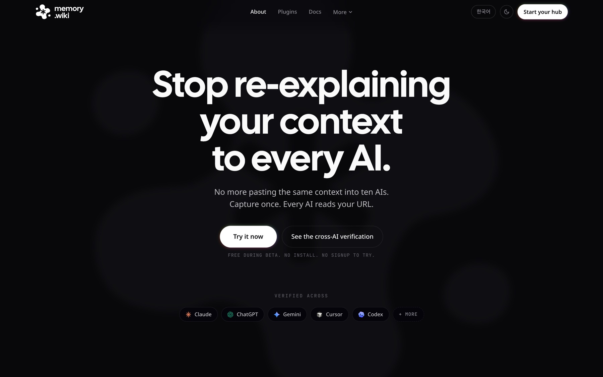
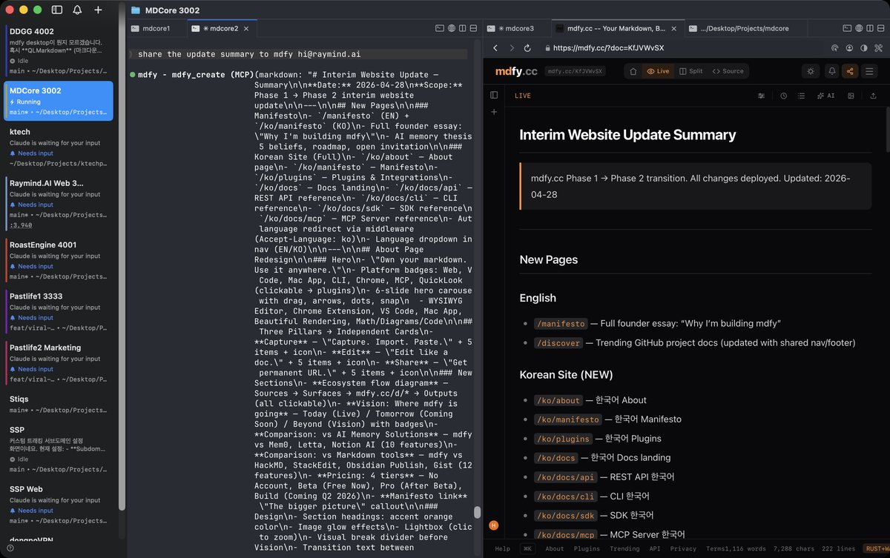

Case 032026Raymind.AI
memory.wikiAI가 바뀌어도 맥락은 그대로
어떤 AI 도구든 같은 자료를 같은 맥락으로 읽게 해 주는 지식 저장소입니다. 기획과 제품 디자인, 개발을 직접 했고, 웹부터 VS Code와 Chrome 확장, CLI, MCP 서버, Mac 앱까지 만들었습니다.
- 역할
- 1인 개발. 기획, 제품 디자인, 개발
- 기간
- 2026년 3월 ~ 9월
- 화면
- 웹, VS Code와 Chrome 확장, CLI, MCP 서버, Mac 앱
- 읽는 AI
- Claude, ChatGPT, Gemini, Cursor 등

프로젝트 소개
memory.wiki는 제 스튜디오의 첫 제품입니다. 어떤 AI 도구든 주소 하나로 같은 자료를 같은 맥락으로 읽게 해 주는 지식 저장소입니다.
1인 개발로 진행했습니다. 기획, 제품 디자인, 개발을 모두 직접 했고, Claude Code로 웹부터 VS Code와 Chrome 확장, CLI, MCP 서버, Mac 앱까지 만들었습니다. 매일 제 일에 직접 쓰면서 필요한 자리를 하나씩 더했고, 화면이 늘어나도 경험이 갈라지지 않도록 데이터와 렌더러를 하나로 두는 구조부터 정했습니다.
- 개발
- 1인 개발, Claude Code
- 화면
- 웹, 확장 두 개, CLI, MCP 서버, Mac 앱이 하나의 데이터와 렌더러를 씀
- MCP 서버
- AI가 직접 쓰는 도구 29개
- 배포
- VS Code Marketplace, Chrome Web Store, npm, 서명과 공증을 거친 Mac 앱
- 검증
- 세 AI에게 같은 질문을 던지는 벤치마크를 직접 설계
- 해결하려 했던 사용자 문제
- AI와 한 작업은 탭을 닫는 순간 사라집니다. 사용자는 같은 맥락을 Claude에, Cursor에, 한 달 뒤 Claude에 또 설명합니다.
- 왜 중요했나
- AI로 하는 일은 늘어나는데 쌓이는 것은 없었습니다. 여러 AI를 함께 쓰는 사람과 조직에게 맥락은 가장 큰 자산인데, 도구마다 갇혀 있었습니다.
- 어떤 과정으로, 어떤 선택을 했나
- 앱이 아니라 주소 하나를 제품으로 정했습니다. 일이 일어나는 곳에서 모으고, AI가 뒤에서 정리하고, 어떤 AI든 주소 하나로 읽게 했습니다.
- 결과와 배운 것
- 같은 자료로 세 AI를 평가해 모두 95% 정답률을 냈고, 세 AI의 답은 서로 93.3% 일치했습니다. 일관성은 화면이 아니라 데이터와 규칙에서 나온다는 것을 배웠습니다.
각각의 정답률
답이 서로 일치한 비율
한 번 쓰면, 어디서 열어도 같은 문서입니다.
편집기에서 쓰는 순간 문서에 주소가 생깁니다. 같은 문서를 VS Code, Chrome, Mac 앱, 터미널, AI 도구 안에서 열고 고칠 수 있고, 어디서 열어도 같은 렌더러가 같은 모습으로 보여 줍니다.





제품 화면은 이름을 memory.wiki로 바꾸기 전, mdfy.cc 시절에 찍은 것입니다.
AI로 하는 일은 늘어나는데, 쌓이는 것은 없었습니다.
AI와 한 작업의 대부분은 탭을 닫는 순간 사라집니다. 그래서 같은 맥락을 Claude에 다시 설명하고, Cursor에 또 설명하고, 한 달 뒤 Claude에 또 설명합니다.
저부터 새 모델과 도구가 나오면 바로 써 보고 일마다 다른 AI를 씁니다. 도구를 바꿀 때마다 맥락은 처음부터 다시 시작했습니다. AI로 하는 일의 양은 계속 늘어나는데, 쌓이는 양은 0이었습니다.

맥락이 자산인데, 도구마다 갇혀 있었습니다.
사람은 한 AI에 머물지 않습니다
AI마다 잘하는 일이 달라 일마다 다른 AI를 씁니다. 각 AI의 기억은 그 AI 안에만 있어서, 도구를 바꿀 때마다 맥락이 끊깁니다.
다시 설명하는 데 시간이 샙니다
같은 배경을 매번 다시 붙여 넣는 일은 작아 보여도, AI를 많이 쓸수록 가장 크게 반복되는 일이 됩니다.
같은 자료면 같은 답이어야 믿습니다
같은 자료를 읽고도 AI마다 다르게 답하면 사람은 무엇을 믿어야 할지 모릅니다. 투자 정보도 같습니다. 앱, 알림, AI 답이 같은 숫자와 같은 문장을 말해야 신뢰가 생깁니다.
앱이 아니라 주소 하나를 제품으로 정했습니다.

주소 하나가 어떤 AI에게나 통하는 입구
memory.wiki 주소를 AI에게 붙여 넣으면, AI가 그대로 읽을 수 있는 깨끗한 문서가 돌아옵니다. 설치할 것도, 배울 형식도 없습니다. 다른 기능은 모두 이 문서를 더 쓸모 있게 만들기 위해 있습니다.
모으기는 일이 일어나는 곳에서
Chrome, VS Code, Cursor, Claude, Mac 앱, CLI, MCP에서 바로 모읍니다. 제가 매일 쓰면서 필요한 자리를 하나씩 더했습니다.
정리는 AI가 뒤에서, 구조는 사람이
문서, 묶음, 허브 세 단계로 나눴습니다. 묶음에는 AI가 뽑은 주제와 관계 그래프가 붙고, 허브는 모든 묶음의 개념을 잇습니다. 사람은 모양만 정합니다.
모든 화면이 같은 데이터를 읽는다
웹, 확장, Mac 앱, AI가 받는 문서가 모두 같은 렌더러와 같은 그래프를 씁니다. 화면에서 보는 그래프가 곧 AI가 받는 내용입니다.

신뢰 규칙은 데이터 쪽에서
초안은 공개 주소로 나가지 않고, 권한은 문서를 내주는 곳에서 검사합니다. 읽는 쪽이 브라우저든 AI든 같은 규칙을 따릅니다. 그래프가 문서보다 오래되면 AI가 알 수 있게 표시하고, 주소는 만료되지 않습니다.
세 AI에게 같은 질문을
같은 자료와 직접 만든 질문으로 Claude,
세 AI가 같은 자료를 읽고 같은 답을 냈습니다.
Claude,
같은 자료를 읽은 세 AI의 답이 서로 일치한 비율.
자료를 프롬프트에 직접 넣은 조건이라 상한선입니다. AI가 주소만 받아 스스로 읽는 실제 경로는 다음 측정으로 남겨 두었습니다.
출시한 화면
- 웹memory.wiki
- VS Code 확장Marketplace
- Chrome 확장Chrome Web Store
- CLI와 MCP 서버npm
- Mac 앱Developer ID 서명과 공증
memory.wiki로 시작한 스튜디오는 이후 AI 엔터테인먼트 제품으로 넓어졌고, 팔도사주도 그중 하나입니다.
여러 화면, 여러 AI에서 같은 경험을 지키며 배운 네 가지
-
01
기술보다 전달 방식이 제품입니다
검색 정확도는 누구나 올릴 수 있지만, 어떤 AI든 주소 하나로 같은 맥락을 받게 하는 전달 방식은 쉽게 따라 하기 어렵다고 봤습니다. 그래서 그래프를 앱 안에 두지 않고, AI가 받는 문서 안에 함께 실었습니다.
넥스트증권에서라면AI가 시장을 설명할 때, 무엇을 말하는지만큼 그 설명이 피드, 종목 화면, 알림 중 어디에 어떤 모양으로 도착하는지를 함께 설계하겠습니다.
-
02
일관성은 화면이 아니라 데이터와 규칙에서 나옵니다
모든 화면이 같은 렌더러와 같은 그래프를 읽게 하자, 편집기와 보기 화면이 다르게 보이는 문제가 구조적으로 사라졌습니다. 색과 간격은 토큰으로 관리해 밝은 화면과 어두운 화면을 같은 체계로 냈습니다.
넥스트증권에서라면디자인 시스템을 컴포넌트에서 멈추지 않고 숫자 표기, 등락 색, 상태 문구 같은 콘텐츠 규칙까지 넓혀, MTS의 모든 화면이 같은 말을 하게 하겠습니다.
-
03
이상적인 조건의 점수는 상한선입니다
95%는 자료를 프롬프트에 직접 넣은 조건의 점수였습니다. AI가 주소만 받아 스스로 읽는 실제 경로는 따로 재야 한다는 것을 결과표에 함께 적었습니다.넥스트증권에서라면AI 답의 품질은 데모가 아니라 실제 사용자가 묻는 방식 그대로 재고, 틀렸을 때 사용자가 알아챌 수 있는 장치를 같이 설계하겠습니다.
-
04
신뢰 규칙은 맨 아래에서 지킵니다
권한을 화면마다 검사하지 않고 문서를 내주는 곳에서 검사하자, 브라우저든 확장이든 AI든 같은 규칙을 따르게 됐고 새 화면이 생겨도 규칙이 새지 않았습니다.
넥스트증권에서라면동의, 권한, 투자 위험 고지 같은 규칙을 화면 단위가 아니라 시스템 단위로 설계해, 새 기능이 생겨도 빠지지 않게 하겠습니다.